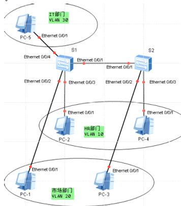
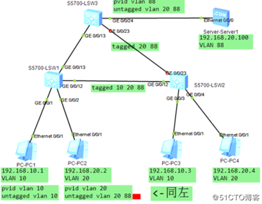

hybrid配置
https://www.cnblogs.com/whatiwhere/p/8824401.html
交换机中不可能有纯以太网帧准备从一个接口向外发出
access接口发出的数据帧都不携带任何tag，
华为交换的trunk接口默认只允许vlan 1 通过，vlan 1不需要放行
其他vlan信息在接收或发送时，都要先创建vlan，且必须放行这些vlan
hybrid接口
hybrud接口,它既可以连接普通终端接入链路,也可以接交换机间干道链路,它允许多个VLAN的帧通过,并可以在出接口方向将某些vlan帧的标签剥掉
处理过程:
1:收到一个二层帧,判断是否有vlan标签,没有则标记上hybrid接口的PVID,进行下一步处理;若有,判断该hybrid接口是否允许该vlan的帧进入,允许则进行下一步处理,否则丢弃
2:当数据帧从hybrid接口发出时,交换机判断vlan在本接口的属性是untagged还是tagged,如果是untagged,先剥离帧的vlan标签,在发送;如果是tagge,则直接发送,
hybrid接口灵活,能实现access也能实现trunk
对于接PC端的端口
port hybrid pvid vlan 20
port hybrid untagged vlan 20 # 修改了
PVID值后，需要untagged本身，也就是放行本身 这时相当于access口
交换机接口类型可以是access、trunk和hybrid。access只能属于一个vlan，只能接收转发对应的vlan的帧；trunk类型接口默认属于所有vlan，任何tagged帧都能接受和转发；hybrid接口可自主定义端口上能接收和转发哪些VLANtag帧，并可决定VLANtag是否继续携带或者剥离，

『组网需求』
vlan10和vlan20不能通讯,
默认所有接口都是hybrid,接口的PVID是vlan1,所有接口收到没有标签的二层数据帧,都被转发到vlan1中,并继续以untagged的方式把帧发送到vlan1的其他接口,所以默认全通讯
PC地址为
PC1:10.1.1.1
PC2:10.1.1.2
PC3:10.1.1.3
PC4:10.1.1.4
PC5:10.1.1.5
taged的意思是将数据包从端口发出时在数据包中加上vlan号.
由于电脑(做服务器的除外)网卡不能分辨包中的vlan号,所以接电脑的口都是设置成untag.
交换机之间的口要靠包中的vlan号辨别包是属于哪个vlan,就需要设置成tagged.
\
vlan batch 10 20 30
#
interface Ethernet0/0/1
port hybrid tagged vlan 10 20 30
#
interface Ethernet0/0/2
port hybrid pvid vlan 20
port hybrid untagged vlan 20 30
#
interface Ethernet0/0/3
port hybrid pvid vlan 10
port hybrid untagged vlan 10 30
#
interface Ethernet0/0/4
port hybrid pvid vlan 30
port hybrid untagged vlan 10 20 30
\
vlan batch 10 20 30
#
interface Ethernet0/0/1
port hybrid tagged vlan 10 20 30
#
interface Ethernet0/0/2
port hybrid pvid vlan 20
port hybrid untagged vlan 20 30
#
interface Ethernet0/0/3
port hybrid pvid vlan 10
port hybrid untagged vlan 10 30
hybrid实验
华为交换机hybrid配置小实验

实验目的：使用技术hybrid
PC1和PC3互通；PC2 PC4互通，且与server互通
步骤：
在三台交换机上创建VLAN 10 20 88；
在SW1 gi 1接口配置pvid VLAN 10，untagged VLAN10，
gi 2接口配置pvid VLAN 20，untagged VLAN20 88
gi 12 13 接口配置tagged VLAN 10 20 88/
在SW2 gi 3 4接口配置相应pvid,untagged
SW2 gi 12 接口上配置tagged VLAN 10 20 88
SW2 gi 23接口上配置tagged VLAN 20 88
做完此步骤应保证PC 13与24的互通
在SW3 gi 13 23 上配置tagged VLAN 20 88
SW3 gi 5上配置 pvid VLAN 88 untagged VLAN 20 88
给客户端配置ip address，测试验证//
注gi 23链路是被我关闭的；绿色的gi 13链路是STP 生成树备份链路 可做可不做